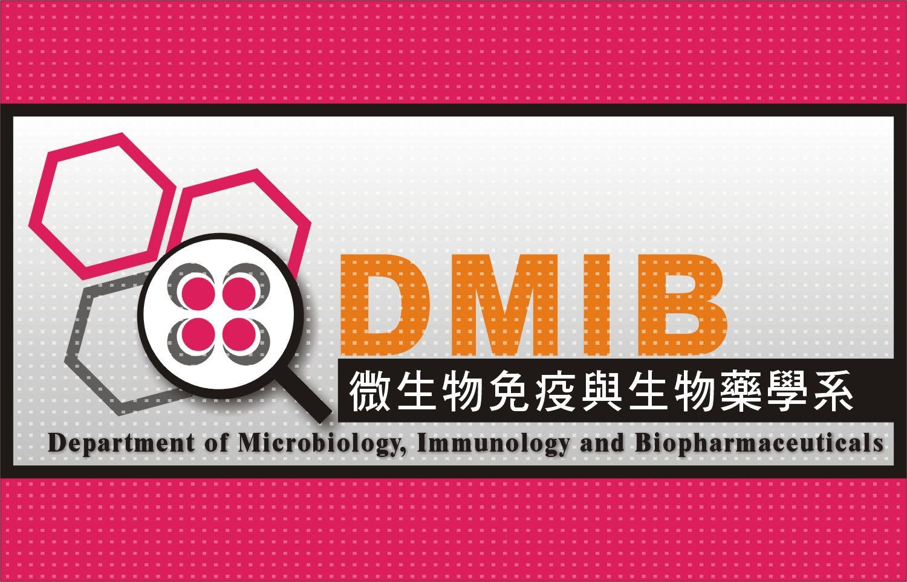
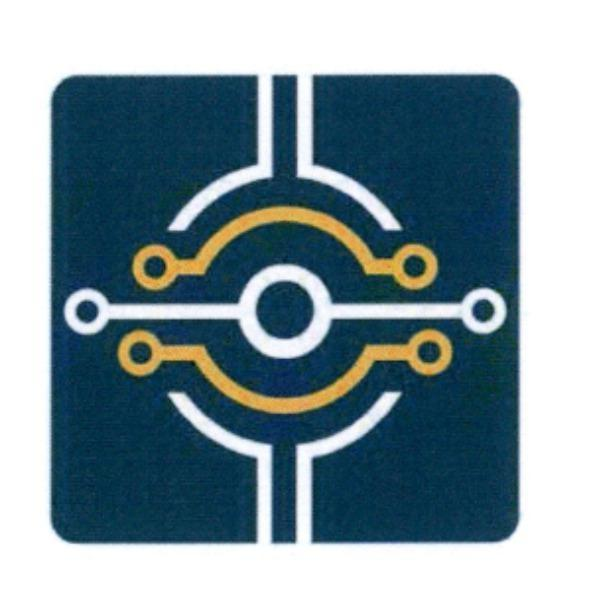
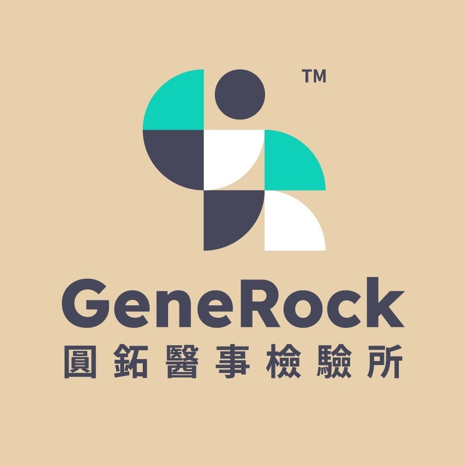

陳冠中 (Jack Chen)
聯絡資訊
教育背景
微生物免疫與生物藥學系暨研究所 碩士
國立嘉義大學 | 2019/09 - 2020/09

微生物免疫與生物藥學系 學士
國立嘉義大學 | 2015/09 - 2019/06
核心職能庫
IVD 產品開發
- 設計開發流程
- ISO13485
- ISO14971
- IVDR
- QMS
分子生物技術
- DNA/RNA 萃取
- 基因轉殖
- PCR 技術應用
- 試劑凍乾配方
微生物技術
- 無菌操作
- 菌種篩選鑑定
- 5L 發酵槽操作
- 酒類與天貝發酵
分析與驗證
- Micro-FTIR
- Bio-FET
- SDS-PAGE
- Western blotting
- ELISA
職涯歷程
高級研發工程師 / 研發工程師
美商長典生技股份有限公司
2023/03 - Now

- 阿茲海默症 (Alzheimer's disease) biomarker 檢測平台開發 (BCR)。
- 設計並完成平台第三方認證，結果與市場龍頭技術高度相關 (R > 0.9)，靈敏度達 pg 等級。
- 優化檢驗流程，成功縮減 50% 檢驗時間；構想設計高通量檢驗平台並執行效能評估。
- 使用 Micro-FTIR 驗證固體表面改質官能基與均勻度分析，並建立產線檢驗規範。
- 選用高穩定性生物分子化學修飾法進行共價鍵結，增加晶片表面安定性。
- 設計生物檢測試驗 (抗原抗體、核酸雜交方法學) 與執行 Bio-FET 臨床診斷效能試驗。
- 建立 ISO13485 三階文件與四階表單，協助公司順利取得 ISO13485 認證。
- 負責跨部門與跨領域之技術溝通、討論與專案進度管理。
研發工程師
台灣圓點奈米技術股份有限公司
2021/11 - 2023/03

- [專案研發] 優化自動化核酸萃取試劑與 qPCR 檢測試劑開發，效能等同市場龍頭品牌。
- [技術拓荒] 拓荒開發 qPCR 冷凍乾燥試劑，安定性達半年以上並維持與液態版本相等之效能。
- [生化生產] 負責重組蛋白質 (E. coli system) 生產與純化技術。
- [品質控管] 訂定微生物檢驗規範及原料/半成品/成品規格書，確保產線品質。
- [法規認證] 撰寫體外診斷醫療器材 (IVDR、EUA) 技術文件與報告，成功取得 IVDR 認證。
- [體系維護] 撰寫設計開發檔案 (DHF) 與風險評估管理，建立產品 BOM 表、包裝指引與標籤。
工程師
圓鉐醫事檢驗所
2021/06 - 2021/10

- 規劃並建立醫學檢驗實驗室，包含 P2 實驗室管理制度與感控流程建立。
- 負責檢驗試劑效能評估、分子檢驗技術 Troubleshooting 及醫檢師教育訓練。
- 協助新冠肺炎 (COVID-19) PCR 檢驗事務執行及相關行政庶務管理。
專任研究助理
國立嘉義大學
2020/10 - 2020/12

- [基礎研究] 執行 Cloning、CRISPR/Cas9 質體設計及白色念珠菌基因轉殖菌株建構。
- [產品開發] 精釀啤酒、紅白酒、蜂蜜酒等酒類產品開發，包含風味菌株篩選與製程優化。
- [平台建立] 建立黃豆固態發酵平台 (天貝)，優化糖苷配基異黃酮生產製程與無菌管控。
- [技術指導] 指導啤酒工作坊及勞動部職訓局自釀實作課程。
專案成果
Bio-FET based Diagnostic Assay 開發與優化
研發 BCR 技術應用於阿茲海默症生物標記檢測，成功通過林口長庚醫院檢驗科第三方驗證。
2X qPCR Master Mix 優化與凍乾拓荒開發
效能與領先品牌相等，液態版本已成功上市，凍乾版本加速安定性已可達半年之保存期限。
SARS-CoV-2 Multiplex RT-qPCR diagnostic kit 開發
完成臨床前測試基準，並撰寫TFDA EUA文件申請審查。
Tissue genomic DNA extraction kit (IVD) 效能與縮時優化
多數組織檢體 A260/A230 > 1.8，可於45分鐘內完成核酸萃取。
客戶拜訪與需求調查
醫學中心醫院合作
參與阿茲海默症生物標記於臨床檢驗中所需之規格定義與需求調查。
臺灣人體生物資料庫 (Taiwan Biobank)
開發 4-6 mL 濃縮血液之自動 gDNA 萃取流程，效能媲美領先品牌。
醫學檢驗所技術優化
指導醫檢師分生操作，並優化 SARS-CoV-2 核酸萃取平台，大幅縮短病患檢體篩檢時間。
論文著作
白色念珠菌微衛星 CAI 多樣性對環境壓力與毒性因子 ECE1 之影響 (2020)
探討 Rlm1p 麩醯胺酸重複數對毒力與抗藥性的影響。
應用伽瑪輻射誘變改良少孢根黴優化天貝異黃酮含量 (2020)
第一作者發表於嘉大農林學報。透過輻射誘變改良菌種，提升發酵風味與營養價值。
研討會海報
伽瑪輻射改良 Rhizopus oligosporus 蛋白酶與脂肪酶活性 (2019)
第一作者發表於 TTQAS 年度大會暨創新食品開發論壇。
探討乳酸菌代謝產物抑制白色念珠菌生長之效果 (2018)
第一作者發表於第 23 屆細菌學研討會。